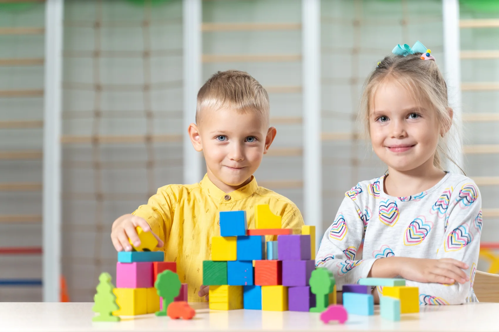
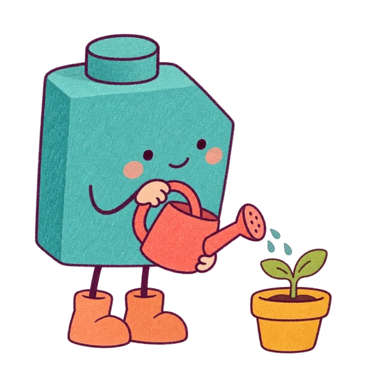
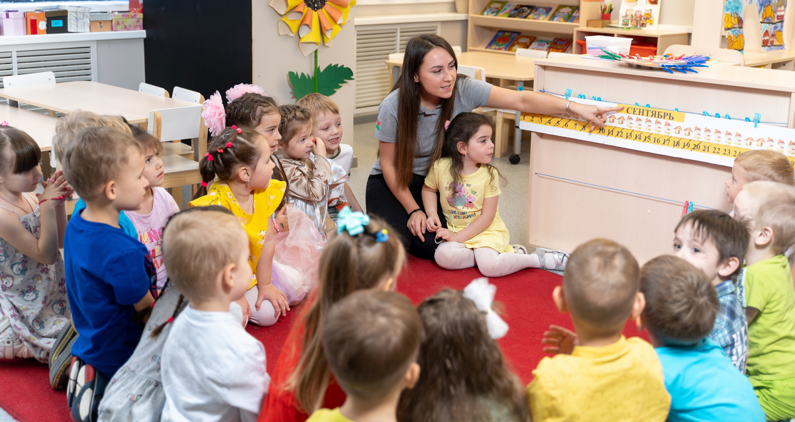
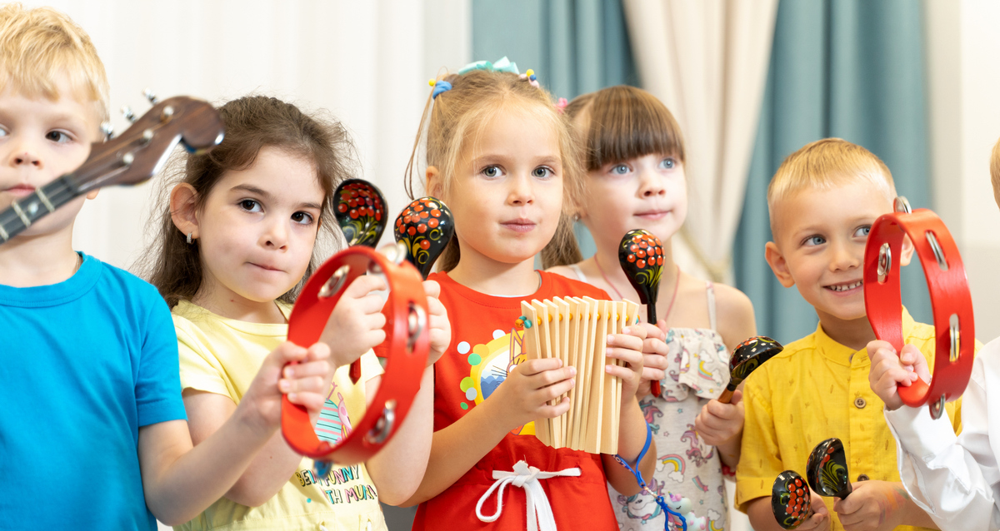
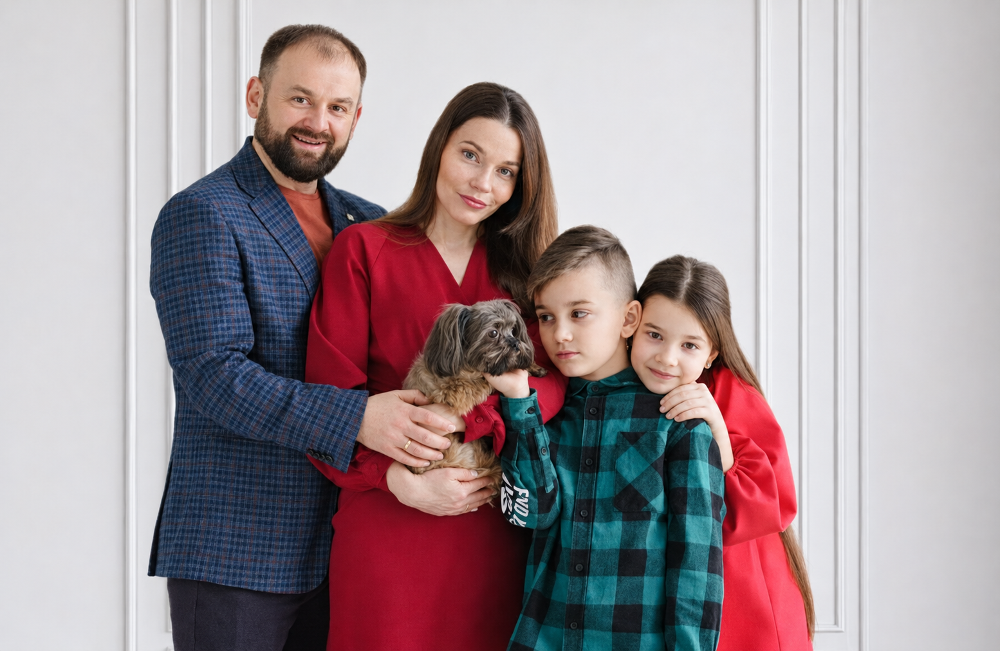
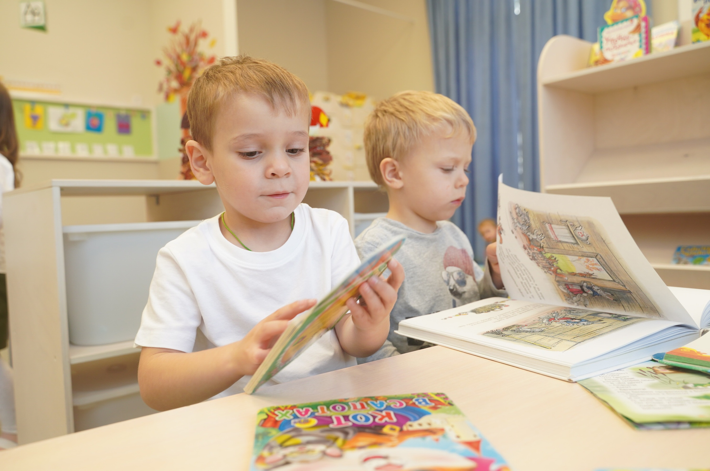

Сеть частных детских садов
Детство, полное открытий.
Сады полного дня для детей от 1 года до 7 лет в Мурино, Кудрово и Санкт-Петербурге.

- Три детских садаПетербург и Ленинградская область
- Программа «ПРОдетей»Игра, общение и самостоятельность
- Образовательная лицензияДокументы доступны на сайтах садов
Программа «ПРОдетей»
Дети сами выбирают,
что им интересно


День начинается с общего круга. Ребята обсуждают планы и выбирают, чем заняться. Педагог даёт время попробовать и помогает, когда это нужно.
Утренний круг
Дети делятся новостями, обсуждают предстоящий день и знакомятся с заданиями в центрах активности.
Центры активности
Можно строить, рисовать, играть по ролям, исследовать природу или придумывать истории. Дети работают небольшими группами по интересам.
Прогулки, обед и отдых
В течение дня ребята гуляют, обедают и отдыхают. В садах предусмотрено пятиразовое питание, а после тихого часа продолжаются игры и занятия.
Музыка, движение и речь
Ребята поют, играют с ритмом, занимаются физкультурой и развивают речь. Дополнительные студии и расписание можно уточнить в выбранном саду.
Наши филиалы
Выберите свой сад
Позвоните в ближайший сад, чтобы узнать о группах, свободных местах и стоимости.

Ленинградская область
Кудрово
Европейский пр., 13, корп. 4

Санкт-Петербург
Кондратьевский
Кондратьевский пр., 70, корп. 1
Дополнительные занятия
Все занятия и абонементы
История сети
Всё началось
с семьи
Денис и Юлия Кащеевы искали детский сад для дочери. В 2017 году они открыли свой первый сад в Кудрово. Затем появились сады в Мурино и на Кондратьевском проспекте.


Отзывы
Родители о наших садах
Адаптация прошла очень мягко, ребёнок счастливый туда бежит.
ОлесяМурино
Второй ребенок тоже пошел в наш любимый садик, даже не смотря на то, что мы переехали.
МарияКудрово
Воспитатели очень внимательные, находят подход и дочка с радостью бежит в группу.
Светлана А.Кондратьевский
Каждый день, разнообразные занятия, очень много поделок и рисунков остаётся на память.
Татьяна Л.Мурино
Педагоги умеют найти подход к каждому ребёнку.
ДинаКудрово
Ребёнок хорошо ходит в этот садик, адаптация прошла быстро.
Ника Б.Кондратьевский
Видеоотзывы
Родители о Кудрово


Перед знакомством
Частые вопросы
С какого возраста принимаете детей?
В сети есть группы для детей от 1 года до 7 лет. Возрастной состав группы и наличие мест можно уточнить у администратора филиала.
Какой у садов режим работы?
С понедельника по пятницу. В Мурино и Кудрово с 7:00 до 20:00, на Кондратьевском проспекте с 7:30 до 19:30. О группах неполного дня расскажет администратор филиала.
Как проходит знакомство с садом?
Договоритесь об экскурсии с администратором. На встрече можно посмотреть помещения и обсудить с командой садика режим дня, питание и первые дни ребёнка в группе.
Сколько стоит посещение?
За актуальной стоимостью и условиями договора обратитесь в выбранный сад. Администратор подскажет доступные форматы и какие занятия в них входят.
Где посмотреть лицензию и документы?
На нашем сайте есть сведения об образовательных организациях. Выберите сад, чтобы посмотреть его лицензию, документы, программу и педагогический состав.
Экскурсия для родителей
Приходите
знакомиться
Посмотрите группы, познакомьтесь с командой и задайте вопросы о том, что важно вашей семье.
Выбрать сад для экскурсии